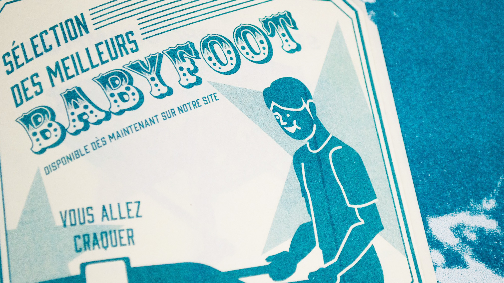
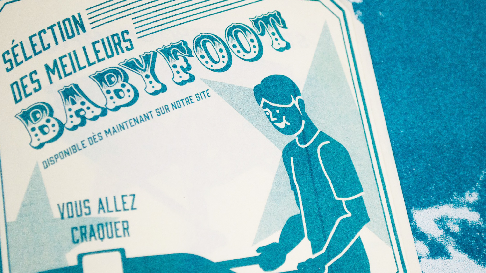

Création d’un fanzine sur un faux club de babyfoot pour explorer la risographie. Réalisé en équipe de trois, ce projet mêle dessins et photographies, et m'a permis de développer mes compétences de collaboration et de prise de décision.
 
